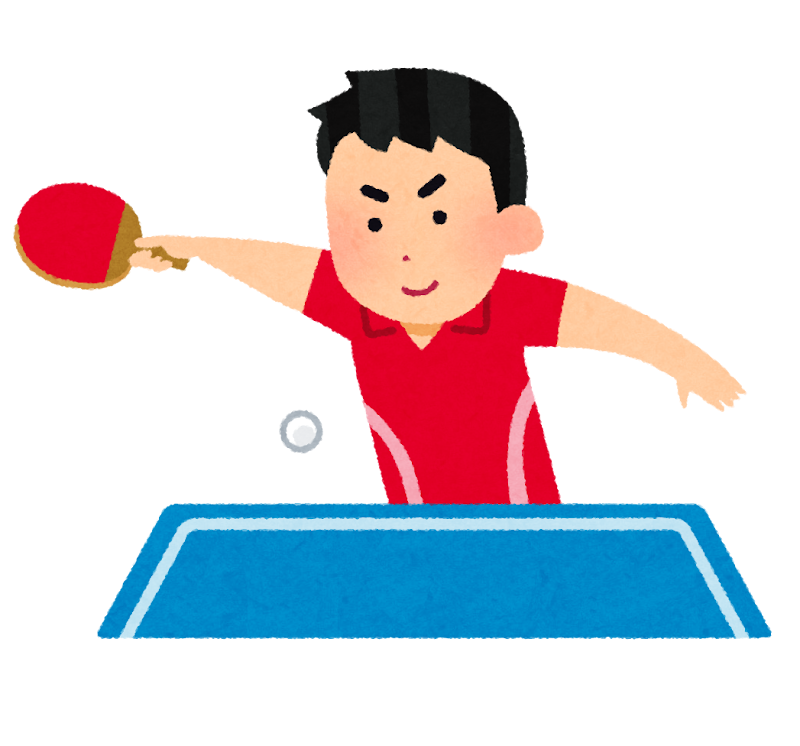
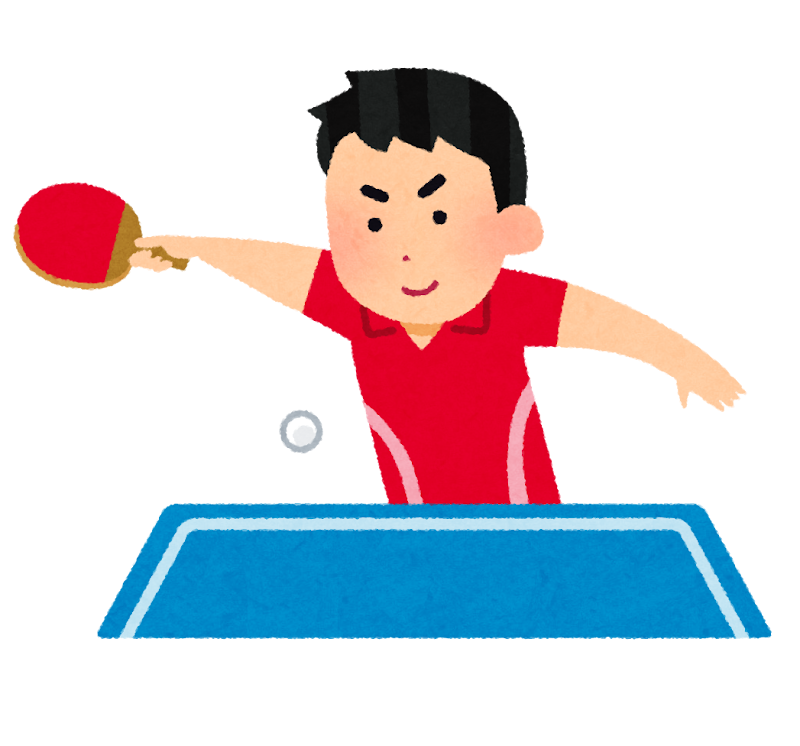

卓球とは
球技の一種である。2人(あるいは2組のペア)のプレーヤーがテーブルをはさんで向かい合い、 対戦相手のコートへとプラスチック製のボールをラケットで打ち合って、得点を競う
他のネット型球技と同じく「ボールを交互にリターン(返球)し合い、相手がリターンできない ようリターンをした者が得点する」という典型的な形式のラケットスポーツである
球技の一種である。2人(あるいは2組のペア)のプレーヤーがテーブルをはさんで向かい合い、 対戦相手のコートへとプラスチック製のボールをラケットで打ち合って、得点を競う
他のネット型球技と同じく「ボールを交互にリターン(返球)し合い、相手がリターンできない ようリターンをした者が得点する」という典型的な形式のラケットスポーツである
卓球は競技レベルの幅がとても広い。というのも、単純な競技経験の年数や、身体能力といった要因 だけでは勝敗が決まらないところ。
私が最も素晴らしいと感じている点が、年齢関係なく卓球は死ぬまでできるというところ。